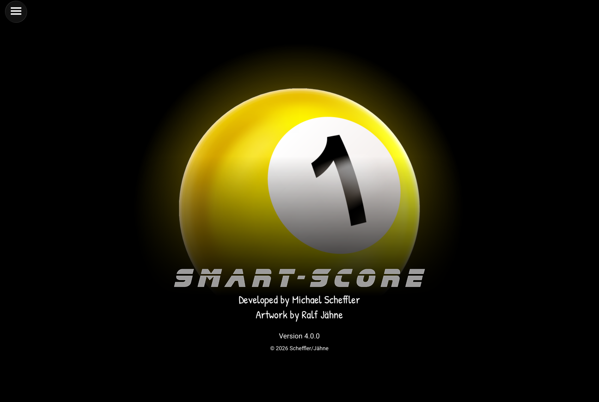
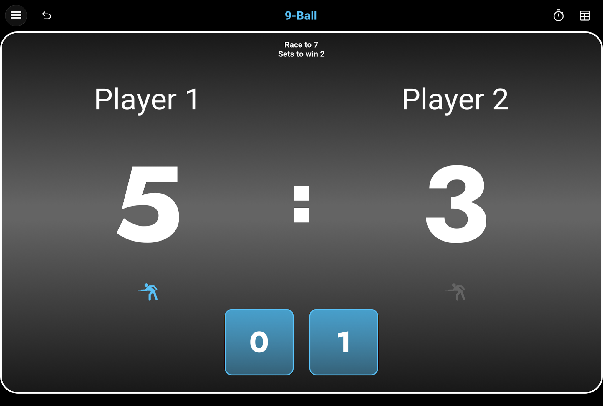
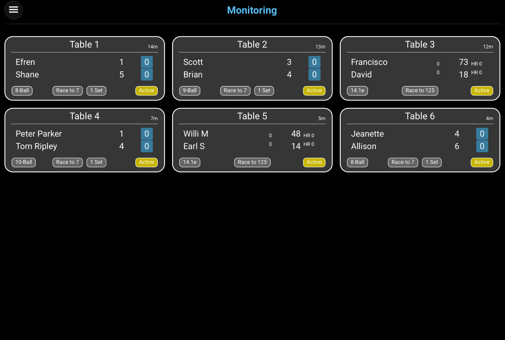
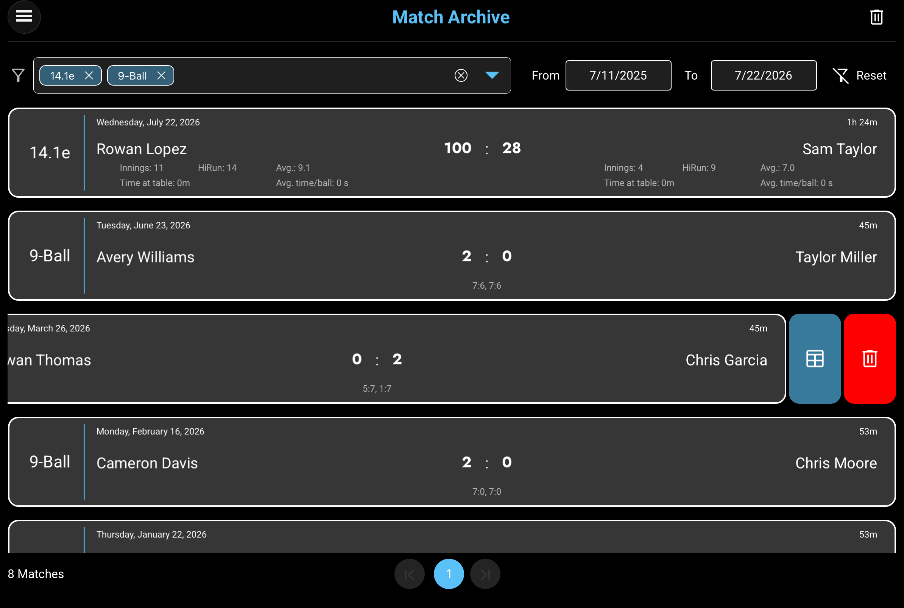
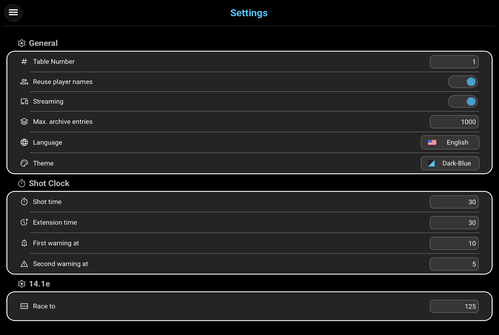

01
Getting started
Open Smart-Score and create a new match. Select the discipline, enter the players, choose the match target, and confirm the setup to begin scoring.
More information →
02
Disciplines
Smart-Score supports four pool disciplines: Straight Pool, 8-Ball, 9-Ball, and 10-Ball. Each discipline has a scoring page designed around its rules and all information needed during a match.
More information →
03
Monitor matches
Use the monitoring view to follow active tables and match progress from one overview.
More information →
04
Review the archive
Open the match archive to find completed games. Filter the list by discipline or date and review scores and match statistics.
More information →
05
Configure Smart-Score
Use Settings to adjust Smart-Score to your preferred table, match, and display configuration.
More information →